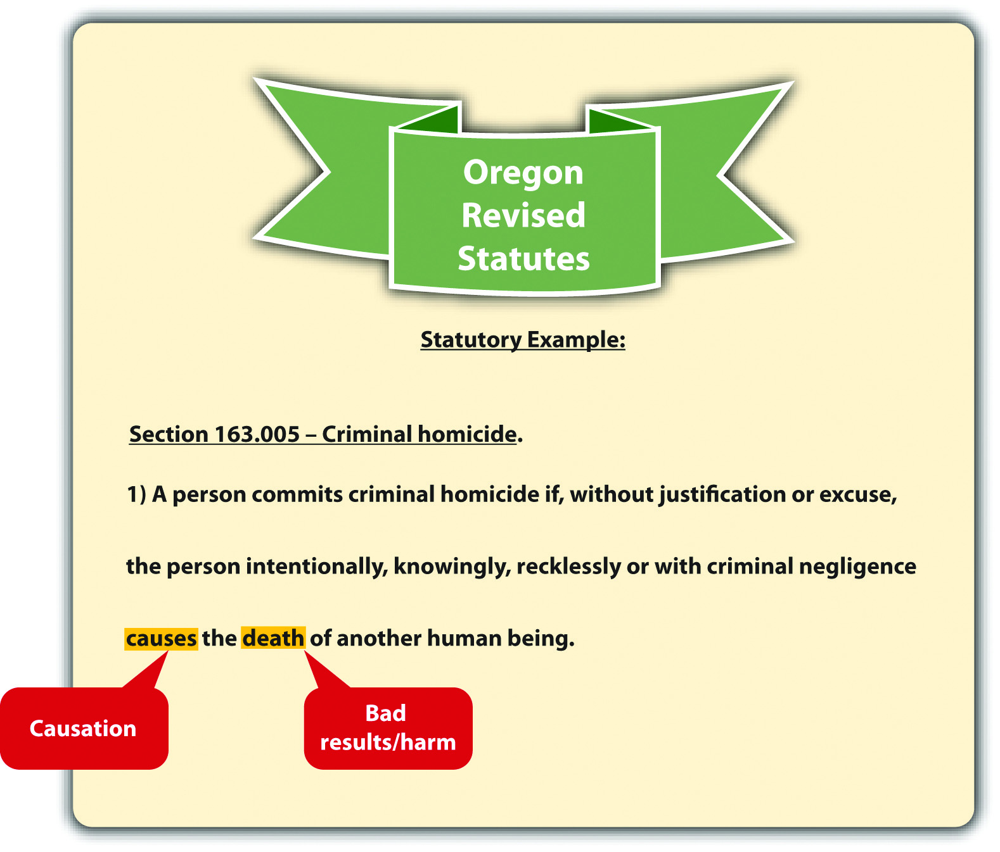
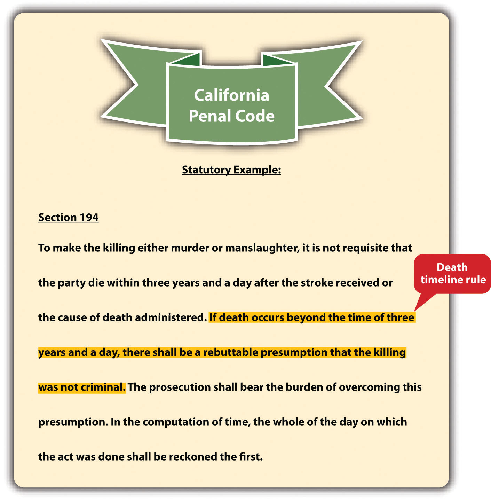
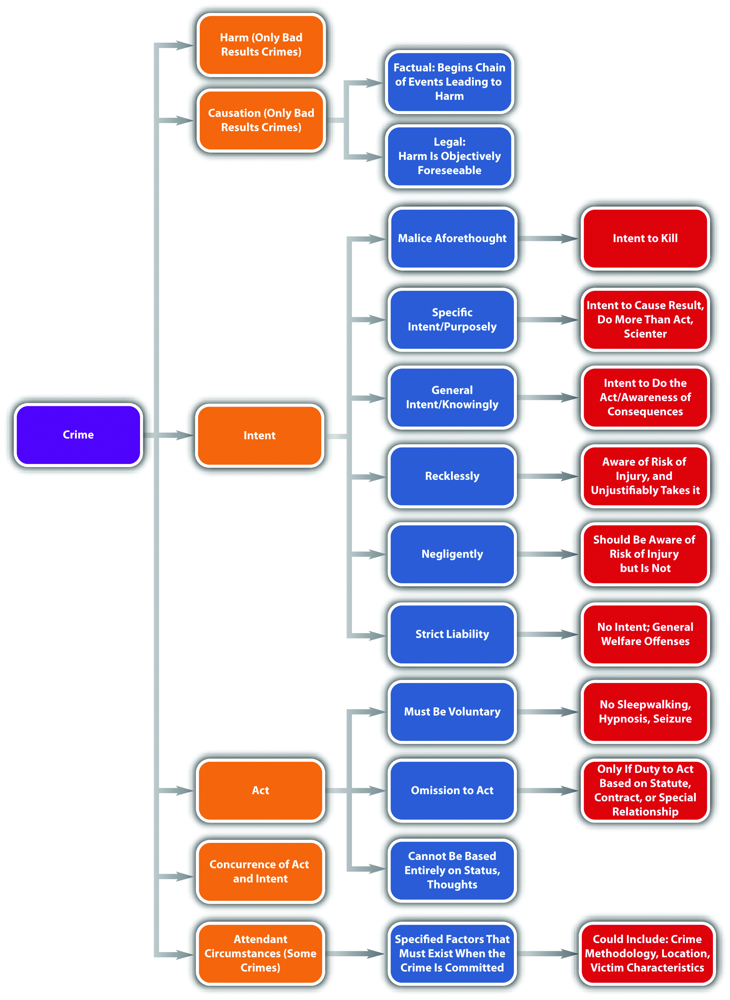

As stated previously, causationAn element required for crimes that specify a bad result; the defendant must cause the harm. and harmAn element of bad result crimes; the harm is the injury specified in the statute or case in jurisdictions that allow for common-law crimes. can also be elements of a criminal offense if the offense requires a bad result. In essence, if injury is required under the statute, or the case is in a jurisdiction that allows for common-law crimes, the defendant must cause the requisite harm. Many incidents occur when the defendant technically initiates circumstances that result in harm, but it would be unjust to hold the defendant criminally responsible. Thus causation should not be rigidly determined in every instance, and the trier of fact must perform an analysis that promotes fairness. In this section, causation in fact and legal causation are examined as well as situations where the defendant may be insulated from criminal responsibility.
Figure 4.9 Oregon Revised Statutes
Every causation analysis is twofold. First, the defendant must be the factual or but for causeThe defendant starts the chain of events leading to the harm. of the victim’s harm. The but for term comes from this phrase: “but for the defendant’s act, the harm would not have occurred.”Del. Code Ann. tit. II, § 261, accessed February 14, 2011, http://delcode.delaware.gov/title11/c002/index.shtml#261. As the Model Penal Code states, “[c]onduct is the cause of a result when…(a) it is an antecedent but for which the result in question would not have occurred” (Model Penal Code § 2.03(1)(a)). Basically, the defendant is the factual or but for cause of the victim’s harm if the defendant’s act starts the chain of events that leads to the eventual result.
Henry and Mary get into an argument over their child custody agreement. Henry gives Mary a hard shove. Mary staggers backward, is struck by lightning, and dies instantly. In this example, Henry’s act forced Mary to move into the area where the lighting happened to strike. However, it would be unjust to punish Henry for Mary’s death in this case because Henry could not have imagined the eventual result. Thus although Henry is the factual or but for cause of Mary’s death, he is probably not the legal causeThe defendant is criminally responsible for the harm because it is a foreseeable consequence of the defendant’s criminal act..
It is the second part of the analysis that ensures fairness in the application of the causation element. The defendant must also be the legal or proximate cause of the harm. Proximate means “near,” so the defendant’s conduct must be closely related to the harm it engenders. As the Model Penal Code states, the actual result cannot be “too remote or accidental in its occurrence to have a [just] bearing on the actor’s liability” (Model Penal Code § 2.03 (2) (b)).
The test for legal causation is objective foreseeability.California Criminal Jury Instructions No. 520, accessed February 14, 2011, http://www.justia.com/criminal/docs/calcrim/500/520.html. The trier of fact must be convinced that when the defendant acted, a reasonable person could have foreseen or predicted that the end result would occur. In the example given in Section 4 "Example of Factual Cause", Henry is not the legal cause of Mary’s death because a reasonable person could have neither foreseen nor predicted that a shove would push Mary into a spot where lightning was about to strike.
The Model Penal Code adjusts the legal causation foreseeability requirement depending on whether the defendant acted purposely, knowingly, recklessly, or negligently. If the defendant’s behavior is reckless or negligent, the legal causation foreseeability requirement is analyzed based on the risk of harm, rather than the purpose of the defendant.
Imagine that Henry and Mary get into the same argument over their child custody agreement, but this time they are in their garage, which is crowded with furniture. Henry gives Mary a hard shove, even though she is standing directly in front of a large entertainment center filled with books and a heavy thirty-two-inch television set. Mary staggers backward into the entertainment center and it crashes down on top of her, killing her. In this situation, Henry is the factual cause of Mary’s death because he started the chain of events that led to her death with his push. In addition, it is foreseeable that Mary might suffer a serious injury or death when shoved directly into a large and heavy piece of furniture. Thus in this example, Henry could be the factual and legal cause of Mary’s death. It is up to the trier of fact to make this determination based on an assessment of objective foreseeability and the attendant circumstances.
Another situation where the defendant is the factual but not the legal cause of the requisite harm is when something or someone interrupts the chain of events started by the defendant. This is called an intervening superseding causeSomething or someone that breaks the chain of events started by the defendant’s criminal act, insulating the defendant from criminal responsibility.. Typically, an intervening superseding cause cuts the defendant off from criminal liability because it is much closer, or proximate, to the resulting harm.Connecticut Jury Instructions No. 2.6-1, accessed February 14, 2011, http://www.jud.ct.gov/ji/criminal/part2/2.6-1.htm. If an intervening superseding cause is a different individual acting with criminal intent, the intervening individual is criminally responsible for the harm caused.
Review the example with Henry and Mary in Section 4 "Example of Legal Causation". Change the example so that Henry pulls out a knife and chases Mary out of the garage. Mary escapes Henry and hides in an abandoned shed. Half an hour later, Wes, a homeless man living in the shed, returns from a day of panhandling. When he discovers Mary in the shed, he kills her and steals her money and jewelry. In this case, Henry is still the factual cause of Mary’s death, because he chased her into the shed where she was eventually killed. However, Wes is probably the intervening superseding cause of Mary’s death because he interrupted the chain of events started by Henry. Thus Wes is subject to prosecution for Mary’s death, and Henry may be prosecuted only for assault with a deadly weapon.
In criminal homicide cases, the causation analysis could be complicated by a victim’s survival for an extended time period. Because of modern technology, victims often stay alive on machines for many years after they have been harmed. However, it may be unreasonable to hold a defendant responsible for a death that occurs several years after the defendant’s criminal act. A few states have rules that solve this dilemma.
Some states have either a one year and a day ruleThe victim must die within one year and a day of the defendant’s criminal act, or the defendant will not be the legal cause of death. or a three years and a day ruleThe victim must die within three years and a day of the defendant’s criminal act, or the defendant will not be the legal cause of death..S.C. Code Ann. § 56-5-2910, accessed February 15, 2011, http://www.scstatehouse.gov/code/t56c005.htm. These rules create a timeline for the victim’s death that changes the causation analysis in a criminal homicide case. Under one or three years and a day rules, the victim of a criminal homicide must die within the specified time limits for the defendant to be criminally responsible. If the victim does not die within the time limits, the defendant may be charged with attempted murder, rather than criminal homicide. California makes the timeline a rebuttable presumption that can be overcome with evidence proving that the conduct was criminal and the defendant should still be convicted.Cal. Penal Code § 194, accessed February 14, 2011, http://codes.lp.findlaw.com/cacode/PEN/3/1/8/1/s194.
Figure 4.10 California Penal Code
Death timeline rules are often embodied in a state’s common law and have lost popularity in recent years.Key v. State, 890 So.2d 1043 (2002), accessed February 15, 2011, http://www.lexisone.com/lx1/caselaw/freecaselaw?action= OCLGetCaseDetail&format=FULL&sourceID=beehed&searchTerm= efiQ.QLea.aadj.eaOS&searchFlag=y&l1loc=FCLOW. Thus many states have abolished arbitrary time limits for the victim’s death in favor of ordinary principles of legal causation.Rogers v. Tennessee, 532 U.S. 541 (2001), accessed February 14, 2011, http://caselaw.lp.findlaw.com/scripts/getcase.pl?court=us&vol=000&invol=99-6218. Death timeline rules are not to be confused with the statute of limitations, which is the time limit the government has to prosecute a criminal defendant.
Figure 4.11 Diagram of the Elements of a Crime
Answer the following questions. Check your answers using the answer key at the end of the chapter.